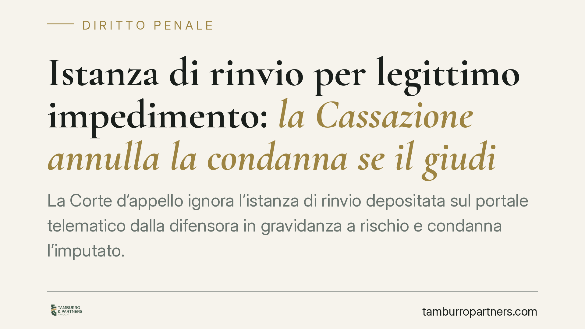

Istanza di rinvio per legittimo impedimento: la Cassazione annulla la condanna se il giudice ignora l'avvocata in gravidanza
La Corte d'appello ignora l'istanza di rinvio depositata sul portale telematico dalla difensora in gravidanza a rischio e condanna l'imputato. La Cassazione annulla: il mancato esame dell'impedimento legittimo del difensore lede il diritto di difesa e integra nullità assoluta. Un principio che riguarda ogni giudizio in cui la presenza del legale è imprescindibile.

Il fatto
Una difensora deposita, attraverso il portale telematico, un'istanza di rinvio dell'udienza d'appello: gravidanza a rischio, documentata, con impossibilità di comparire. La Corte territoriale non esamina l'istanza, celebra l'udienza in assenza del difensore di fiducia e conferma la condanna.
La Cassazione ha annullato la pronuncia. Il punto non è la fondatezza o meno dell'impedimento, ma il fatto che il giudice non abbia preso in considerazione un'istanza ritualmente depositata. Ignorare la richiesta equivale a negare al difensore la possibilità di far valere un impedimento assoluto a comparire.
> Nota: gli estremi completi della pronuncia (numero e data) vanno verificati in banca dati prima di ogni utilizzo in atti. La decisione risulta anonimizzata nella fonte divulgativa consultata; non ne riportiamo gli estremi non confermati.
Inquadramento normativo
La disciplina dell'impedimento a comparire è contenuta nell'art. 420-ter del codice di procedura penale. Il comma 5 regola l'ipotesi di assenza del difensore per legittimo impedimento: quando risulta che l'assenza è dovuta ad assoluta impossibilità di comparire per caso fortuito, forza maggiore o altro legittimo impedimento, il giudice dispone il rinvio.
Sul versante specifico della maternità, la gravidanza e il puerperio sono stati espressamente valorizzati come causa di impedimento del difensore dalla riforma processuale penale (d.lgs. 150/2022, cd. riforma Cartabia) e dagli interventi successivi in materia di tutela della genitorialità nel processo. L'istanza va presentata prontamente, non appena l'impedimento è insorto o conosciuto: la tempestività è condizione di ammissibilità, perché il giudice deve poter organizzare l'agenda e verificare la documentazione.
La conseguenza del mancato esame è la più grave prevista dall'ordinamento. L'omessa valutazione dell'istanza incide sull'assistenza e la rappresentanza dell'imputato: si configura la nullità assoluta ai sensi del combinato disposto degli artt. 178, lett. c), e 179 c.p.p. È un vizio rilevabile d'ufficio in ogni stato e grado del procedimento, non sanabile e non soggetto a decadenze.
Implicazioni pratiche
Per l'imputato, il principio ha un effetto diretto: la presenza del difensore di fiducia non è un accessorio, ma un presupposto di validità del processo. Celebrare l'udienza ignorando un impedimento ritualmente dedotto espone la decisione all'annullamento.
Per il difensore, la decisione conferma che il deposito telematico dell'istanza produce i suoi effetti: il giudice ha l'onere di prenderla in esame e di motivare l'eventuale rigetto. Il silenzio non è una risposta ammissibile.
Resta però fermo un dato: il difensore deve agire con diligenza. L'istanza va depositata appena l'impedimento si manifesta, corredata di documentazione idonea (certificazione medica nel caso di gravidanza a rischio) e con l'indicazione dell'assolutezza dell'impossibilità a comparire. Un'istanza generica, tardiva o priva di prova rischia il rigetto nel merito, e in quel caso il vizio non si configura.
Cosa fare in concreto
- Deposita tempestivamente l'istanza di rinvio appena l'impedimento insorge o ne hai conoscenza: la prontezza è requisito, non cortesia.
- Documenta l'assolutezza dell'impedimento con certificazione medica specifica (nel caso di gravidanza a rischio, l'indicazione della prognosi e dell'impossibilità a comparire).
- Conserva la ricevuta del deposito telematico: è la prova che l'istanza è entrata nella disponibilità dell'ufficio.
- Verifica a verbale se l'istanza è stata esaminata; in caso di omesso esame o di udienza celebrata in assenza, fai constatare il vizio.
- Deduci la nullità nei motivi di impugnazione, richiamando gli artt. 178, lett. c), e 179 c.p.p.: trattandosi di nullità assoluta, è rilevabile anche d'ufficio e non soggetta a sanatoria.
Un avvertimento di metodo
Prima di fondare un'impugnazione su una pronuncia divulgata online, verificane sempre gli estremi completi in banca dati ufficiale. Le massime riportate dalle fonti giornalistiche sono utili orientativamente, ma gli atti si costruiscono sul testo integrale e verificato della decisione.
---
*Contributo informativo a cura di Tamburro & Partners – Avv. Giuseppe Tamburro. Non costituisce parere legale.*
Ogni condominio ha una storia a sé.
Se gestisci un'amministrazione e vuoi un confronto su una specifica questione condominiale, scrivi allo studio. Ti rispondiamo entro un giorno lavorativo.